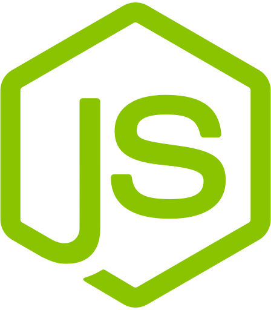
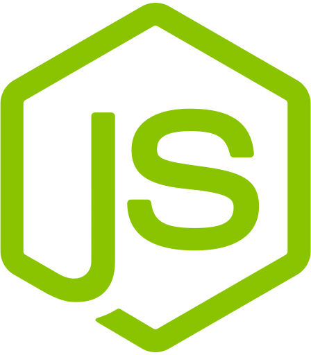

Sobre mí
¡Hola! Soy Damián Muracciole, un Desarrollador Web Full Stack Jr. con formación en Ingeniería Electrónica. Me apasiona trabajar en proyectos desafiantes que me permitan crecer profesionalmente y desarrollar mis habilidades técnicas.
Mi experiencia en desarrollo incluye haber trabajado como Desarrollador Full Stack en el proyecto integrador de CAFEARTE.COM, donde apliqué todo lo aprendido durante mi formación en Digital House. Durante este proyecto, trabajé en un equipo de cuatro integrantes, lo que reforzó mi capacidad para colaborar y comunicarme eficientemente con mis colegas. Además, tuve la oportunidad de trabajar con herramientas como Postman, APIs y Git, entre otras, lo que amplió mis conocimientos técnicos.
A lo largo de mi carrera, he tenido la oportunidad de trabajar tanto en equipos como de forma individual, y encuentro un gran valor en el trabajo colaborativo, ya que creo que la combinación de habilidades y perspectivas diferentes puede conducir a soluciones más sólidas y creativas. Mi perfil técnico y metódico me permite abordar problemas de manera eficiente y efectiva, mientras que mi costado educador me impulsa a compartir conocimientos y ser un compañero colaborativo en el equipo.
Además de mi formación en desarrollo web, también tengo experiencia en el área de Ingeniería en automatización, donde trabajé con programación de automatismos utilizando PLC y sistemas embebidos. En mi rol como Analista de vibraciones Nivel I, adquirí habilidades adicionales en el análisis de datos y resolución de problemas. Asimismo, en mi experiencia como Ingeniero de desarrollo electrónico, pude desarrollar habilidades en la programación de microcontroladores en lenguaje C.
Soy una persona que valora el buen trato y el respeto en el ambiente laboral. Creo que el trabajo en equipo es fundamental para alcanzar los objetivos y disfruto trabajar con personas con diferentes experiencias y habilidades.
Además de mi formación y experiencia, también he participado en diversos cursos para continuar enriqueciendo mis conocimientos, incluyendo un Experto Universitario de Seguridad de la Información y cursos de PHP, MySQL y programación de microcontroladores en BASIC y C.
Siempre estoy dispuesto a aprender y enfrentar nuevos retos, y estoy emocionado de formar parte de proyectos que me permitan seguir creciendo como profesional y como persona.
¡Gracias por visitar mi portfolio y conocerme un poco más!


 
